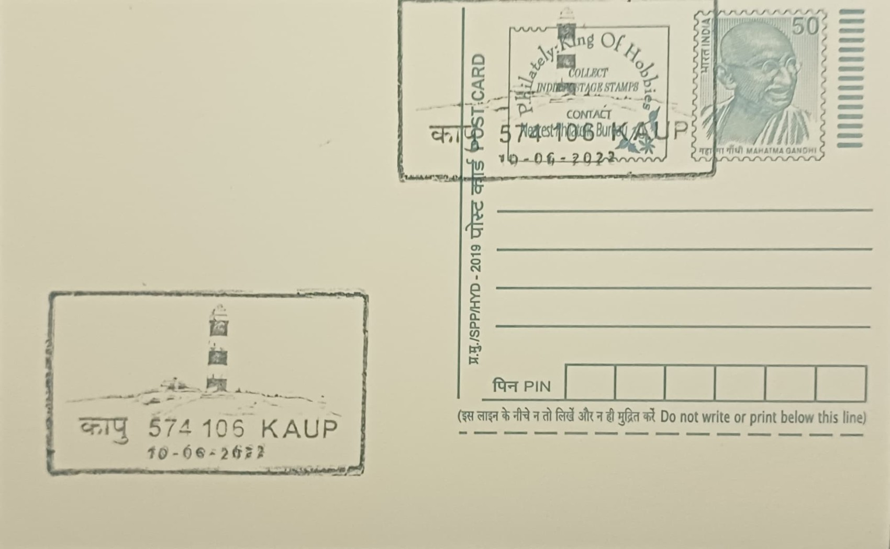

Kaup Lighthouse
ಕಾಪು ದೀಪಸ್ತಂಭ


Kaup Lighthouse takes its name from the small coastal town of Kaup (also spelled Kapu), a fishing settlement on the Arabian Sea roughly seven kilometres south of Udupi town along the old Malabar coast road. Unlike many Indian landmarks tied to religious founding legends, its origin is a straightforwardly administrative one: it was raised by the British colonial government as part of a broader effort to modernise navigational aids along India's western seaboard, where an increasingly busy coastal shipping trade had made this stretch of rocky, reef-studded shoreline near Udupi hazardous for vessels without a reliable marker.
The lighthouse belongs to the category of working maritime navigation aids rather than a religious or purely ornamental monument, and its significance rests chiefly on its age and continuous operational history. It is counted among the oldest lighthouses still functioning on the Karnataka coast, and today it falls under the charge of India's Directorate General of Lighthouses and Lightships, the central agency responsible for the country's coastal lighting network. Beyond its navigational role, it has acquired a secondary identity as a heritage and recreational site, drawing visitors for its sunset views and its place in the modest tourism economy of the surrounding fishing village.
Construction was carried out by the British administration, with the lighthouse tower rising to approximately 27.12 metres on a rocky headland overlooking Kaup beach. Its original optical apparatus, a second-order lens assembly fitted with petroleum-vapour lighting equipment and a 55-millimetre burner, was supplied by the Birmingham firm of Chance Brothers, a leading manufacturer of lighthouse optics during the colonial period, and the station was formally commissioned into service on 30 April 1901. The tower was later repainted in alternating black-and-white bands and underwent general improvements in 1935, upgrades characteristic of the incremental modernisation British-era lighthouses received through the early twentieth century as lighting and maintenance technology advanced.
A distinctive feature of the site is the presence of ruined gun emplacements on a rocky outcrop close to the lighthouse, known locally as the Kaup Battery. These cannon ruins are believed to date from the era of Tipu Sultan, the eighteenth-century ruler of Mysore, who established a chain of coastal batteries and bunkers at strategic points along the Malabar and Kanara coasts to guard against naval incursions, predating the lighthouse itself by over a century. The juxtaposition of an earlier military defence structure with a later civilian navigational tower gives the headland a layered historical character distinct from most other lighthouse sites on this coast.
Today the lighthouse is open to visitors for a few hours each evening, typically between 4 p.m. and 6 p.m., with a nominal entry fee charged for the climb to the gallery at the top, from where the coastline, the fishing village, and the distant Western Ghats are visible. It remains an active aid to navigation maintained by the Directorate General of Lighthouses and Lightships even as it functions as one of the more visited lighthouse-and-beach combinations on the Udupi coast, drawing day-trippers from Mangaluru and Udupi town particularly around sunset.
| Date of Introduction | August 20, 2017 |
|---|---|
| Address | Sub Postmaster, |
| Kaup SO, | |
| Udupi (dt.), Karnataka - 574106. |